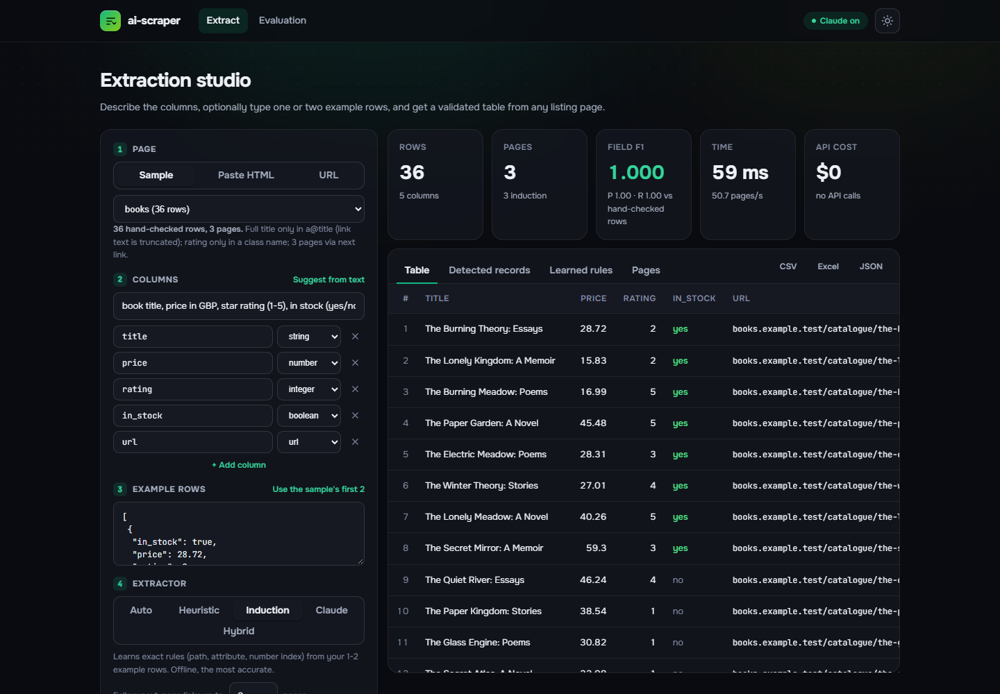

Name the columns, type two example rows, get validated data scored against hand-checked rows
induction 2 example rows → F1 1.000 dev, 0.937 held-out claude opus-5-5, schema-checked → F1 0.995 cost 19 pages → $0.44, hybrid needs 15 calls rerun content-hash cache → 0 calls, $0 14 page sets · 264 rows · 83 tests · 93% coverage
